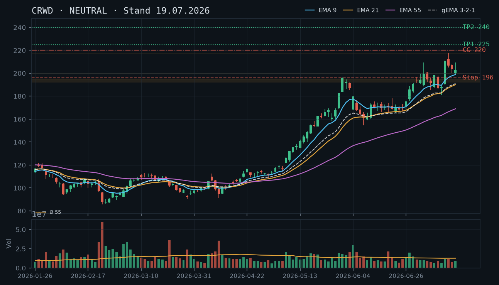
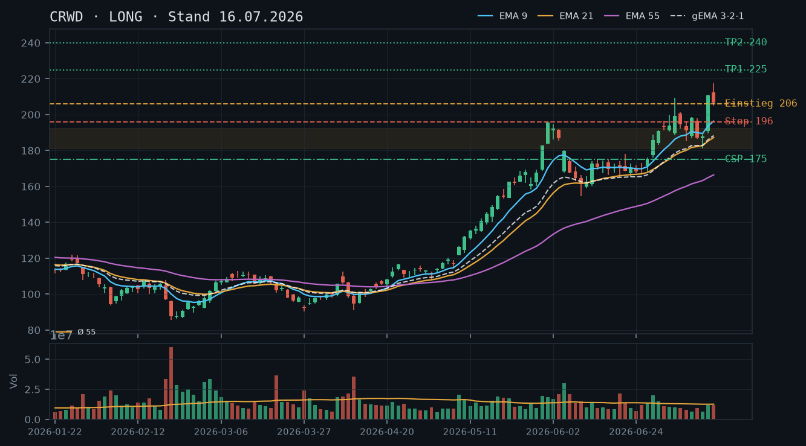
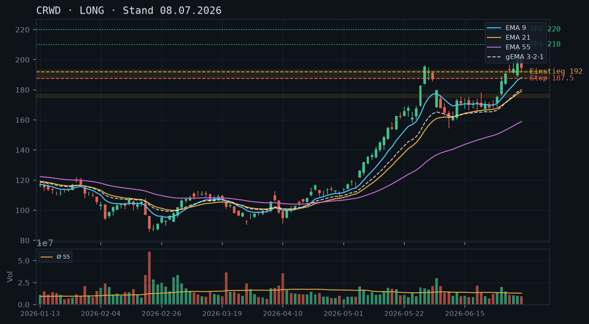

CRWD
Analyse-Historie · neueste zuerstCRWD hat nach dem Juli-Spike eine klare Korrektur eingeleitet – die bullische Struktur ist noch intakt, aber der Kurs testet kritische Support-Zonen; der Short Put 180 läuft morgen aus und ist top-of-mind.

1 · Trendstruktur
Der Aufwärtstrend seit März ist strukturell noch intakt (höhere Tiefs: 181,00 → 185,30 → 187,00 → 189,46 als Aufwärtstrendlinie), aber die jüngsten vier Kerzen (17.–22.07.) zeigen klar niedrigere Hochs und niedrigere Tiefs: Hoch 209,50 → 208,25 → 200,00 → 193,49, Tief 199,52 → 197,82 → 189,68 → 185,05. Die Aktie befindet sich in einer Short-Term-Downswing-Phase innerhalb des übergeordneten Aufwärtstrends. Kritische Zone: 185–189 USD (Vor-Spike-Konsolidierungszone 07.–13.07., mehrfach getestet). Darunter liegt die nächste Unterstützung bei ~181,00 (Tief 13.07.) und dann erst bei 175–177 USD.
2 · Candlestick-Formationen
Die letzten drei Kerzen zeichnen ein bearisches Bild: 21.07. – Bearish Engulfing-Ansatz (Eröffnung 199,81, Schlusskurs 191,15, Tagesrange 189,68–200,00) mit erhöhtem Volumen (0,78x); 22.07. – weitere Abwärtskerze (Eröffnung 192,56, Tief 185,05, Schlusskurs 188,42), Intraday-Recovery von den Lows aber kein überzeugender Reversal-Hammer. Das Tief 185,05 touchierte die untere Kante der Vor-Spike-Zone. Kein bullisches Reversal-Signal bisher bestätigt – ein Hammer oder Bullish Engulfing oberhalb 185 wäre der gesuchte Trigger.
3 · EMA-Lage (9 / 21 / 55)
EMA-Reihenfolge: EMA9 (195,51) > EMA21 (190,63) > EMA55 (171,46) – klassisch bullisch, aber der Kurs (188,42 Schlusskurs gestern) handelt bereits unter dem EMA21 und nähert sich dem EMA9 von unten. gema_321 liegt bei 189,88 und wurde gestern ebenfalls unterschritten. Dies ist ein Warnsignal: Der Kurs hat die gesamte kurzfristige EMA-Struktur von oben durchschnitten. Solange EMA21 und gema_321 (189–190) nicht zurückerobert werden, bleibt der kurzfristige Bias bärisch. Ein Rückfall unter EMA55 (171) wäre ein struktureller Bruch – aktuell noch weit entfernt.
4 · Trade-Setup
| Richtung | Kein Trade |
| Einstieg | Kein Neueinstieg – bestehende 100-Aktien-Position läuft; Watchlevel für Neueinstiege bzw. Bestands-Aufstockung: Reversal-Kerze über 190–191 (Rückeroberung gema_321/EMA21) |
| Stop | 183,00 (unterhalb der Vor-Spike-Zone 185–189, klarer Strukturbruch) |
| Ziel | 203–206 (Konsolidierungszone 16.–20.07.) / 217,50 (Spike-Hoch) |
| CRV | Kein aktiver Neueinstieg – laufende Position; bei Reversal-Einstieg 191: CRV ~2,0:1 bis Ziel 203 |
5 · Stillhalter (max. 12 Tage)
Zwei simultane Baustellen: Der Short Put 180 (Verfall 24.07., morgen) hat noch 5,3% Puffer zum aktuellen Kurs 189,59 – er wird mit hoher Wahrscheinlichkeit wertlos verfallen, aber der Markt ist in Bewegung. Gleichzeitig bietet sich nach dem Verfall morgen ein neuer Covered Call an, um den 100-Aktien-Bestand in der Konsolidierungsphase weiter zu monetarisieren. Ein neuer CSP direkt im Anschluss ist angesichts des laufenden Downswings und des Aktienbestands (bereits Long-exponiert) nicht empfohlen.
| Geschäft | Covered Call |
| Strike | 200.0 |
| Puffer | 5.5 % |
| Zone | oberhalb der Konsolidierungszone 16.–22.07. (Hochs 207–209 als Deckel, 200 als psychologische Marke und obere Kante des aktuellen Kursbereichs) |
| Verfall bis | 2026-08-01 (9 Tage) |
| Begründung | Nach Verfall des Short Put 180 morgen (24.07.) bietet sich ab 25.07. ein neuer Covered Call auf die 100 Aktien an. Strike 200 liegt ~5,5% über dem aktuellen Kurs (189,59) und leicht über dem gema_321/EMA21-Cluster (189–191), der aktuell als Deckel wirkt. Der Kurs müsste die gesamte kurzfristige EMA-Struktur zurückerobern, um 200 zu erreichen – ein anspruchsvoller Weg im aktuellen Downswing. Andienungsszenario: Abgabe der 100 Aktien bei 200 wäre ein akzeptabler Exit (deutlich über Einstiegskurs ~192–194), würde aber das Upside-Potential (Ziel 2: 225) kappen. Alternativ 205er-Strike prüfen (~8,1% Puffer) – dort wäre mehr Luft für eine Erholung. In der Optionskette zu prüfen: Prämie bei Delta ca. -0,25 bis -0,30, Liquidität am 200er- bzw. 205er-Strike, IV nach dem Rücksetzer ggf. erhöht. |
Bestand: Bestehender Short Put 180, Verfall 24.07. (morgen, DTE=1): Bei aktuellem Kurs 189,59 beträgt der Abstand zum Strike 5,3% – der Put ist Deep Out-of-the-Money und wird mit sehr hoher Wahrscheinlichkeit wertlos verfallen. Aktueller Preis laut Snapshot: 1,25 (was bei DTE=1 und 5,3% Abstand hoch erscheint – möglicherweise erhöhte IV oder der Snapshot-Preis spiegelt den Intraday-Zeitpunkt 11:38 wider). Empfehlung: Halten bis Verfall – kein Roll notwendig. Sollte der Kurs intraday unerwartet unter 182–183 fallen (Näherung an den Strike auf unter 2%), wäre ein vorzeitiges Schließen (Buy-to-Close) zur Risikobegrenzung zu erwägen. Nach Verfall: Covered Call wie oben beschrieben eröffnen.
Ausführliche Analyse vom 23.07.2026 anzeigen
CRWD – Detailanalyse 23.07.2026
Abgleich mit früheren Analysen
Die Long-These vom 08.07. (Einstieg 192–194) hat sich zunächst bestätigt: Das erste Ziel (215,00) wurde am 15.07. mit Hoch 217,50 erreicht – exakt wie in der Analyse vom 16.07. dokumentiert. Der CC-Vorschlag vom 19.07. (Strike 220, Verfall 25.07.) war strukturell korrekt; ob er eröffnet wurde, geht aus dem IBKR-Snapshot nicht hervor (keine offene CC-Position gelistet). Der CSP-Vorschlag vom 16.07. (Strike 175, Verfall 24.07.) war mit 15,4% Puffer komfortabel – der Kurs ist niemals auch nur annähernd in diese Zone gefallen. Diese Analyse war konservativ und korrekt. Der aktuelle Short Put 180 (Verfall 24.07.) ist eine eigenständige neue Position, die im heutigen Snapshot sichtbar ist und unmittelbar bearbeitet werden muss.
1. Trendstruktur – Detailanalyse
Der übergeordnete Aufwärtstrend seit dem März-Tief (90,45 am 27.03.) ist strukturell ungebrochen. Die Sequenz höherer Tiefs lautet: 90,45 → 94,08 → 154,22 (Konsolidierung) → 161,23 → 167,52 → 181,00 (Tief 13.07.) → 185,05 (Tief 22.07., in Arbeit). Solange 181,00 hält, ist die Aufwärtstrendlinie intakt.
Kurzfristig (seit 15.07. Spike-Hoch 217,50) befindet sich CRWD jedoch in einem klar definierten Downswing:
- Swing-Hochs fallend: 217,50 (15.07.) → 209,50 (17.07.) → 208,25 (20.07.) → 200,00 (21.07.) → 193,49 (22.07.)
- Swing-Tiefs fallend: 205,10 (15.07.) → 199,52 (17.07.) → 197,82 (20.07.) → 189,68 (21.07.) → 185,05 (22.07.)
Kritische Zonen (mehrfach bestätigt):
- Support 185–189 USD: Dies ist die Vor-Spike-Konsolidierungszone vom 07.–13.07. (Hochs 189,25–201,37, Tiefs 181,00–192,22). Diese Zone wurde am 22.07. mit Tief 185,05 bereits angetastet. Ein Schlusskurs darunter wäre ein erster struktureller Warnschuss.
- Support 181,00 USD: Tief vom 13.07. – letztes bestätigtes Swing-Tief vor dem News-Spike. Dies ist die letzte Bastion des Aufwärtstrends auf dem Weg zurück zur Vor-Spike-Struktur.
- Widerstand 200–203 USD: EMA21/gema_321-Cluster und Konsolidierungszone 16.–20.07. – hier muss der Kurs durch, um den Downswing zu brechen.
- Widerstand 206–210 USD: Mehrfach bestätigte Hochs vom 17.–20.07. – stärkerer Deckel.
2. Candlestick-Formationen – Detailanalyse
Die Kerzen der letzten fünf Handelstage im Detail:
- 17.07. (203,08 Schluss, rel. Vol. 0,72): Bearische Kerze nach dem Spike, Tagesrange 199,52–209,50. Erster Hinweis auf Erschöpfung.
- 20.07. (198,49 Schluss, rel. Vol. 0,58): Weiterer Rückgang, Tief 197,82. Unterdurchschnittliches Volumen – kein Panikverkauf, eher Drift.
- 21.07. (191,15 Schluss, rel. Vol. 0,78): Beschleunigung des Downswings, Kerze eröffnet bei 199,81 und schließt bei 191,15 – de-facto ein Bearish Engulfing gegenüber den Vortages-Candlebody. Schlusskurs unter EMA21 und gema_321.
- 22.07. (188,42 Schluss, rel. Vol. 0,72): Tief 185,05 touchiert Support-Zone-Unterkante. Schlusskurs 188,42 erholt sich von den Tiefs – potenzieller Hammer-Ansatz, aber der Körper ist zu groß und der obere Docht zu kurz für ein klassisches Reversal-Signal. Kein bestätigtes Reversal.
Fazit Candlesticks: Wir brauchen heute oder morgen eine Bullish Engulfing-Kerze oder einen klar definierten Hammer mit Schlusskurs über 190 (gema_321), um das Short-Term-Momentum zu drehen. Fehlt dieses Signal, ist ein Test der 181,00 wahrscheinlich.
3. EMA-Lage – Detailanalyse
Stand Schlusskurs 22.07. (188,42):
- EMA9: 195,51 – Kurs 3,8% darunter
- EMA21: 190,63 – Kurs 1,2% darunter
- EMA55: 171,46 – Kurs 9,9% darüber (weit entfernt, keine unmittelbare Relevanz)
- gema_321: 189,88 – Kurs knapp darunter
Die Reihenfolge EMA9 > EMA21 > EMA55 ist noch bullisch, aber der Kurs hat alle kurzfristigen Anker unterschritten. Besonders relevant: Der gema_321 (189,88) und EMA21 (190,63) bilden einen engen Cluster bei 190–191, der nun als Widerstand von oben wirkt. Eine Rückeroberung dieses Clusters (Tagesschluss über 191) wäre das erste technische Kaufsignal. Der EMA9 bei 195,51 ist der nächste Anker darüber – ein Kreuz des Kurses über EMA9 von unten wäre ein klassisches Momentum-Kaufsignal im Kontext des Aufwärtstrends.
4. Trade-Setups (Alternative Szenarien)
Setup A – Reversal-Long (bevorzugt, bedingt):
- Einstieg: Stop-Buy bei 191,50 (über gema_321/EMA21-Cluster, Bestätigung der Rückeroberung)
- Stop: 183,00 (unter Support-Zone 185–189, klarer Strukturbruch)
- Ziel 1: 203,00 (Konsolidierungszone 16.–22.07.) – CRV 1,4:1
- Ziel 2: 210,00 (Widerstandscluster Juli-Hochs) – CRV 2,2:1
- Trigger: Bullische Reversalkerze heute/morgen + Volumen über 1,0x Schnitt
- Anmerkung: Mit bestehendem 100-Aktien-Bestand ist ein Neuaufbau nur sinnvoll, wenn der Aktienbestand als Basis für weiteres Engagement geeignet ist – Risikomanagement beachten.
Setup B – Kein Trade / Abwarten:
- Status quo: 100 Aktien halten, Short Put 180 läuft morgen ab, danach CC eröffnen
- Abwarten auf klare Richtungsentscheidung – entweder Reversal über 191 oder Breakdown unter 185 für klarere Positionierung
Setup C – Defensive (nur bei Breakdown):
- Bei Tagesschluss unter 183,00: Strukturbruch bestätigt – Stop für bestehende 100 Aktien aktivieren, keine neuen Optionspositionen bis zur Stabilisierung
- Nächste Support-Zone dann 175–178 USD (Analyse 16.07., CSP-Strike-Bereich)
5. Stillhalter – Detailanalyse (Schwerpunkt)
A) Bestehender Short Put 180 (Verfall 24.07., morgen)
Der Short Put 180 hat bei aktuellem Kurs 189,59 (11:38 Uhr Snapshot) einen Abstand von 5,3% zum Strike. Bei DTE=1 ist dieser Put tief im OTM-Bereich – das Theta-Decay ist maximal, das Gamma-Risiko ist real aber überschaubar bei diesem Abstand. Der im Snapshot genannte Preis von 1,25 erscheint für einen 5,3% OTM-Put mit DTE=1 relativ hoch; dies deutet auf erhöhte implizite Volatilität nach dem Rücksetzer hin (IV-Spike nach dem Downswing), was den Preis erklärt.
Empfehlung: Halten bis Verfall. Selbst wenn der Kurs heute/morgen weiter fällt, müsste CRWD bis auf 180 abrutschen (weitere ~5% vom aktuellen Niveau), um den Put in-the-money zu bringen. Das ist bei DTE=1 ein extremes Szenario. Roll-Trigger: Nur wenn der Kurs intraday unter 183–184 fällt (Strike-Näherung auf unter 2%), wäre ein Buy-to-Close zur Schadensbegrenzung zu erwägen – lieber die Rest-Prämie opfern als Andienung riskieren, wenn der Stop der Aktie (183,00) ebenfalls in Gefahr gerät.
Andienungsszenario (falls doch): Bei Andienung 100 Aktien zu 180 würde die Position auf 200 Aktien wachsen (die bestehenden 100 + 100 neue). Einstiegspreis der neuen Aktien effektiv: 180 minus kassierte Prämie. Zone 180/181 ist charttechnisch das letzte bestätigte Swing-Tief (13.07.) – ein Einstieg dort wäre strukturell noch vertretbar, aber am unteren Rand des akzeptablen Bereichs. Risiko: Dann wäre die Gesamtposition größer und ein weiterer Rückfall in Richtung 175 würde stärker wirken.
B) Neuer Covered Call nach Verfall (ab 25.07.)
Zonen-Herleitung Strike 200: Die 200-USD-Marke ist die Schnittzone aus (1) psychologischer Runde Zahl, (2) Konsolidierungsbereich 16.–22.07. (mehrfache Intraday-Hochs im Bereich 200–203), (3) EMA21/gema_321-Cluster (190–191 als unmittelbare Hürde, 200 als nächste runde Zahl danach). Ein Strike bei 200 ist ~5,5% über dem aktuellen Kurs (189,59) und liegt deutlich über dem gema_321-Widerstand.
Alternativer Strike 205 (~8,1% Puffer): Liegt in der Widerstandszone der Juli-Konsolidierungshochs (203–206). Bietet mehr Luft für eine Erholung, aber vermutlich niedrigere Prämie. Empfohlen, wenn die Prämie bei 200 das potenzielle Upside-Opfer nicht rechtfertigt.
Andienungsszenario CC 200: Abgabe der 100 Aktien zu 200 wäre ein Exit mit signifikantem Gewinn gegenüber Einstieg ~192–194 (aus Juli-Analyse). Ziel 2 (225,00) würde damit aufgegeben – nur sinnvoll, wenn die Prämie des CC diesen Verzicht kompensiert. Bei aktuell erhöhter IV ist die Prämie attraktiver als in ruhigeren Phasen.
Roll-Trigger für den neuen CC: Wenn der Kurs nach Eröffnung des CC auf den Strike zudriftet (Abstand unter 2–3%) und noch mehr als 2 Tage Restlaufzeit verbleiben, Delta des Calls auf -0,40 oder höher ansteigt → Roll auf höheren Strike oder weiteren Verfall erwägen. Konkret: Roll auf 205er oder 210er innerhalb von max. 12 Tagen.
In der Optionskette zu prüfen: Prämie bei Delta -0,20 bis -0,30 am 200er-Strike, Spread-Qualität (Bid/Ask), Open Interest am 01.08.-Verfall. IV-Rank prüfen – nach dem Rücksetzer vermutlich erhöhte IV, was die Prämien begünstigt.
C) Warum kein neuer CSP?
Ein neuer CSP direkt nach Verfall des heutigen würde eine zusätzliche synthetische Long-Exposition aufbauen. Mit 100 Aktien bereits im Bestand und einem laufenden Downswing ohne bestätigtes Reversal ist dies nicht angemessen. Zudem liegt der nächste technisch saubere CSP-Strike (175,00, unter der 181er-Zone) bei ~7,7% Abstand vom aktuellen Kurs – die erzielbaren Prämien bei diesem Abstand und kurzer Laufzeit dürften den Aufwand kaum rechtfertigen. Qualität vor Vollständigkeit: kein CSP in dieser Marktphase.
CRWD konsolidiert nach dem +12%-Spike gesund zwischen 200–210 USD, die bullische Struktur ist intakt, aber kurzfristig fehlt ein klarer Trigger für den nächsten Leg – Schwerpunkt liegt auf dem Covered Call gegen den 100-Aktien-Bestand.

1 · Trendstruktur
Der übergeordnete Aufwärtstrend ist intakt: CRWD hat seit dem März-Tief bei ~90 USD eine Serie steigender Hochs und Tiefs ausgebildet. Das Allzeit-Hoch des Datensatzes liegt bei 217,50 (15.07.). Die aktuelle Konsolidierung zwischen ~199,50 und ~209,50 bildet sich nach dem News-Spike vom 14./15.07. als gesunde Kompression aus – drei aufeinanderfolgende Tage (15.–17.07.) mit Schlusskursen zwischen 203 und 207 deuten auf eine Pause, nicht auf eine Trendumkehr. Unterstützung liegt in der Vor-Spike-Zone 192–195, ein erstes unbestätigtes Widerstandsniveau aus dem Spike-Hoch bei 217,50.
2 · Candlestick-Formationen
Die letzten drei Kerzen (15.–17.07.) zeigen nach dem Spike-Engulfing vom 14.07. (Close 210,73 mit Hoch 211,00) eine klassische Konsolidierungs-Sequenz: 15.07. Shooting-Star-Charakter (Hoch 217,50, Close 206,77 – langer Docht oben), 16.07. Inside-Bar (Range komplett innerhalb der 15.07.-Kerze), 17.07. bullischer Hammer-Ansatz (Tief 199,52, Close 203,08 – Rückkauf an der 200er Marke). Das Muster ist neutral bis leicht bullisch: kein Breakdown-Signal, aber auch kein neues Momentum-Signal.
3 · EMA-Lage (9 / 21 / 55)
EMA-Struktur vollständig bullisch: EMA9 (198,89) < EMA21 (190,05) < EMA55 (169,03), Kurs (203,08) über allem. gema_321 bei 190,97 – der gewichtete Verbund zieht stetig nach oben nach. Die Annäherung von Kurs und EMA9 nach dem Spike ist gesund und schafft Platz für den nächsten Aufwärtsimpuls.
4 · Trade-Setup
| Richtung | Kein Trade |
| Einstieg | Kein Neueinstieg – bestehende Long-Position via 100 Aktien läuft; für Neueinstiege Pullback auf EMA9 (~199) abwarten |
| Stop | 196,00 (unter EMA9 und Konsolidierungsunterkante) / strukturell 189,00 (unter Vor-Spike-Zone) |
| Ziel | 225,00 (Ziel 2 aus Vorlage, unverändert) / 240,00 (psychologische Extension) |
| CRV | Kein aktiver Neueinstieg – laufende Position hält |
5 · Stillhalter (max. 12 Tage)
Mit 100 Aktien im Depot ist ein Covered Call das natürliche Werkzeug dieser Konsolidierungsphase: Prämie kassieren, solange der Kurs zwischen Spike-Hoch (217,50) und aktueller Basis pendelt. Ein CSP würde eine zusätzliche Long-Exposition aufbauen, die angesichts des bereits laufenden Aktienbestands und der erhöhten Volatilität nach dem Spike nicht notwendig und kontraproduktiv ist.
| Geschäft | Covered Call |
| Strike | 220.0 |
| Puffer | 8.0 % |
| Zone | oberhalb des Spike-Hochs vom 15.07. bei 217,50 (einmaliger Test, unbestätigte Zone) und der psychologischen 220-USD-Marke |
| Verfall bis | 2026-07-25 (6 Tage) |
| Begründung | Strike 220,00 liegt ~8% über dem aktuellen Kurs (203,76) und klar oberhalb des bisher einzigen Spike-Hochs bei 217,50 vom 15.07. Dieser Widerstand ist charttechnisch noch nicht bestätigt (nur ein Test), wirkt aber als psychologische Barriere. Der CC schützt die bestehende Long-Position partiell und generiert Prämie in der Konsolidierungsphase. Andienungsszenario: Würde CRWD bei Verfall über 220 stehen, erfolgt die Abgabe der 100 Aktien zu 220 USD – angesichts des Kursniveaus ein akzeptables Niveau, das Ziel 1 (225) jedoch knapp verfehlt. Daher: nur wenn die Prämie den teilweisen Verzicht auf den Upside rechtfertigt. In der Optionskette zu prüfen – Prämie bei Delta ca. -0,20 bis -0,25, Liquidität am 220er-Strike nach dem Volatilitäts-Spike vermutlich erhöht (höhere IV = bessere Prämien). Alternativ 225er-Strike prüfen (Puffer ~10,4%, entspricht exakt Ziel 2) – dort wäre eine Andienung vollständig zielkonform. |
Bestand: Bestehender Aktienbestand von 100 Aktien deckt exakt einen CC-Kontrakt ab – kein Naked-Call-Risiko. Die Long-Position läuft seit Einstieg um 192–194 (08.07., gemäß Vorlage vom 16.07.) mit unrealisiertem Gewinn. Stop strukturell bei 189,00 (unter Vor-Spike-Zone) beibehalten; EMA9-naher Momentum-Stop bei 196–197 für konservativere Absicherung. Kein Roll nötig – keine offenen Optionspositionen im Snapshot. Bei Eröffnung des CC: Roll-Trigger definieren, wenn Kurs sich dem Strike bis auf ~2–3 USD nähert und noch mehr als 2 Tage Restlaufzeit verbleiben (Delta-Anstieg auf -0,40 oder höher als Warnsignal).
Ausführliche Analyse vom 19.07.2026 anzeigen
CRWD – Detailanalyse 19.07.2026
1. Trendstruktur & historischer Abgleich
Der übergeordnete Aufwärtstrend, den die Analyse vom 08.07.2026 korrekt identifiziert hat, ist vollständig intakt. Das erste Kursziel (215,00 USD) wurde am 15.07. mit einem Tageshoch von 217,50 USD nicht nur erreicht, sondern leicht übertroffen – exakt wie die Folgeanalyse vom 16.07. beschrieben hat. Die Aussage der Juli-Analysen wird hiermit bestätigt.
Die aktuelle Marktsituation zeigt eine klassische Post-Spike-Konsolidierung: Nach dem +12%-Tag am 14.07. (Schlusskurs 210,73, Hoch 211,00) und dem Spike-Peak am 15.07. (Hoch 217,50) komprimiert die Aktie in einer Range von ca. 199,50–209,50 USD. Die drei Konsolidierungskerzen (15.–17.07.) haben alle Schlusskurse zwischen 203 und 207 USD – ein sehr enger Bereich, der auf akkumuliertes Marktinteresse ohne Richtungsentscheidung hindeutet.
Wichtige Kursmarken:
- Widerstand: 217,50 (Spike-Hoch 15.07., einmaliger Test – unbestätigte Zone), 220,00 (psychologisch), 225,00 (Ziel 2 aus Analyse 08.07., noch nicht erreicht)
- Unterstützung 1: 199,50–200,00 (Hammer-Tief 17.07., psychologische 200er-Marke – einmaliger Test, noch unbestätigt als Support-Zone)
- Unterstützung 2: 192,22–195,00 (Vor-Spike-Konsolidierungszone, mehrfach getestet Juli-Woche, solide bestätigt gemäß Vorlage vom 16.07.) – diese Zone gilt weiterhin als struktureller Support
- Unterstützung 3: 181,00–185,00 (Breakout-Niveau Ende Juni, ebenfalls mehrfach getestet)
2. Candlestick-Formationen
Der 14.07. war das entscheidende Setup: Bullisches Engulfing / starke Momentum-Kerze mit Close 210,73 bei überdurchschnittlichem Volumen (rel_volumen 0,96 – knapp Durchschnitt, aber der absolute Umfang der Preisbewegung kompensiert). Am 15.07. folgte ein klassischer Shooting Star auf dem Hoch: Eröffnung 212,38, Hoch 217,50, Schluss 206,77 – der lange Docht signalisiert Verkaufsdruck an der Spitze. 16.07.: Inside Bar (207,69/200,07), 17.07.: bullischer Hammer-Ansatz mit Tief 199,52 und Schluss 203,08. Diese Sequenz (Shooting Star → Inside Bar → Hammer) ist ein typisches Breather Pattern nach einem starken Impuls – kein Reversal-Signal, aber auch kein neues Einstiegssignal für Longs.
3. EMA-Lage & Volumen
EMA9 (198,89) – EMA21 (190,05) – EMA55 (169,03): vollständig bullische Staffelung, alle drei steigend. Der gema_321-Verbund bei 190,97 zieht konsistent nach oben. Bemerkenswert: Der Abstand zwischen Kurs (203,08) und EMA9 (198,89) beträgt nur noch ~4 USD – nach dem Spike vom 14./15.07. (wo der Kurs zeitweilig >18 USD über EMA9 lag) eine deutliche Normalisierung. Diese Mean-Reversion zum EMA9 ist gesund und schafft Basis für den nächsten Anstieg.
Volumen-Highlights: Der 14.07. (rel_volumen 0,96) war trotz des +8%-Tages nur durchschnittlich – das deutet auf eher dünne Liquidität beim Ausbruch (News-getrieben, nicht institutionell breit getragen). Die Konsolidierungstage 16.–17.07. (rel_volumen 0,64 und 0,72) liegen klar unter Durchschnitt – klassisches Low-Volume-Pullback, bullisch zu interpretieren.
4. Trade-Setups (Alternativen)
Da eine Long-Position mit 100 Aktien bereits läuft, ist kein Neueinstieg notwendig. Zur Vollständigkeit drei Szenarien:
- Setup A – Continuation Long (bevorzugt für bestehende Position): Halten mit Stop 196,00 (Momentum) / 189,00 (strukturell). Ziel 225,00 (CRV ab aktuellem Kurs 203: ca. 1,8:1 bis 225). Bei Ausbruch über 217,50 mit Volumen: Ziel 225–240 beschleunigt möglich.
- Setup B – Pullback-Einstieg für Neueinsteiger: Limit-Buy um 199–200 (Hammer-Support), Stop 194,50, Ziel 225. CRV: (225-200)/(200-194,50) = 25/5,5 = ca. 4,5:1. Attraktiv, aber setzt voraus, dass 200 als Support hält.
- Setup C – Breakout-Long: Stop-Buy über 217,50 (Spike-Hoch), Stop 210,00, Ziel 240,00. CRV: (240-217,50)/(217,50-210) = 22,50/7,50 = 3,0:1. Erst gültig bei Bestätigung des Ausbruchs mit überdurchschnittlichem Volumen (rel_volumen > 1,3).
5. Stillhalter-Schwerpunkt: Covered Call
Der IBKR-Snapshot vom 19.07.2026 (12:10 Uhr) bestätigt: 100 Aktien im Bestand, keine offenen Optionspositionen. Damit ist die Ausgangslage für einen Covered Call ideal – kein Naked-Call-Risiko, volle Deckung durch den Aktienbestand.
Strike-Herleitung CC 220,00 USD
Das Spike-Hoch vom 15.07. bei 217,50 USD ist der einzige charttechnische Referenzpunkt oberhalb des aktuellen Kurses. Da es sich um einen einzelnen Test handelt, ist 217,50 eine unbestätigte Widerstandszone – kein solides technisches Fundament für einen Strike. Der nächste handelstechnisch sinnvolle Schritt (5er-Raster) ist 220,00 USD, was ~8% Puffer zum aktuellen Kurs (203,76) bedeutet und den psychologischen Widerstand inkorporiert.
Alternativ: 225,00 USD (Puffer ~10,4%) – dieser Strike liegt exakt auf dem zweiten Kursziel aus der Analyse vom 08.07. Eine Andienung bei 225 wäre vollständig zielkonform: Die Long-Position wird dort abgegeben, und die gesamte Aufwärtsbewegung von ~194 auf 225 ist realisiert. Der Trade-off ist eine geringere Prämie durch den weiteren Puffer.
Andienungsszenario CC 220
Bei Andienung zu 220,00 USD: Aktien werden zum Strike abgegeben. Effektiver Verkaufspreis = 220,00 + vereinnahmte Prämie. Dies liegt ~3% unter Ziel 2 (225), ist aber ein sehr respektabler Exit für eine Position mit Einstieg ~194. Nicht akzeptabel wäre der CC, wenn die Analyse einen bevorstehenden Ausbruch über 225 als hochwahrscheinlich einstuft – das ist aktuell nicht der Fall (kein Momentum-Signal, keine Volumenbestätigung).
Verfall und Roll-Logik
Nächster Standard-Verfall innerhalb 12 Tage: 25.07.2026 (Freitag, 6 Tage Restlaufzeit). In der Optionskette zu prüfen: Delta des 220er Calls (Zielbereich -0,20 bis -0,25), Prämien-Höhe im Verhältnis zum 8%-Puffer, Liquidität (Spread-Weite, Open Interest). Die nach dem Spike erhöhte implizite Volatilität (IV) dürfte die Prämien attraktiver gestalten als in ruhigeren Phasen – das ist ein günstiges Zeitfenster für CC-Verkäufe.
Roll-Trigger: Falls CRWD vor Verfall über ~216–217 USD steigt und der Short Call Delta auf -0,40 oder höher klettert und noch ≥2 Tage Restlaufzeit verbleiben: Roll-Überprüfung auf nächsten Verfall (01.08.2026) mit Strike 225 oder höher, möglichst kostenneutral oder für eine Nettoprämie. Kein Rollen in eine Verlustposition ohne klare technische Begründung.
Abgleich mit Vorlage 16.07.: CSP-Empfehlung
Die Analyse vom 16.07. empfahl einen CSP 175,00 mit Verfall 24.07. – dieser Strike und Verfall sind nun hinfällig bzw. abgelaufen (kein offener Put im Snapshot bestätigt). Der übergeordnete Gedanke (breiter Puffer wegen erhöhter IV) bleibt gültig, ist aber für das aktuelle Setup irrelevant, da mit dem Aktienbestand der CC die logische Wahl ist. Ein neuer CSP würde eine zweite Long-Exposition aufbauen (auf 200 Aktien-Äquivalent-Exposure), was bei moderater Risikotoleranz und dem bereits laufenden Engagement nicht empfohlen wird.
Die Long-These vom 08.07. hat funktioniert – Einstieg via Limit-Buy 192–194 wurde am 08.07. gefüllt, das erste Ziel (215,00) wurde am 15.07. mit Hoch 217,50 nach einem news-getriebenen +12%-Tag (Cybersecurity-Sektorrally im Zuge der 'Mythos'-Debatte) bereits erreicht; die Aktie konsolidiert jetzt nach dem Spike, Ziel 2 (225,00) bleibt aktiv.

1 · Trendstruktur
Nach einer mehrtägigen Konsolidierung 181,00–201,37 (07.–13.07., fünffach getestet) sprang der Kurs am 14.07. news-getrieben von 187,91 auf 210,73 (Hoch 211,00, rel_volumen 0,96 – bemerkenswert unauffällig für eine so große Bewegung). Am 15.07. folgte eine Fortsetzung bis 217,50 (damit Ziel 1 der Vorlage erreicht), bevor der Kurs auf 206,77 zurückschloss – eine normale Verdauungsreaktion nach einem vertikalen Move, keine technische Schwäche.
2 · Candlestick-Formationen
13.07.: letzter Tag der Vor-Spike-Konsolidierung, Schluss 187,91. 14.07.: Riesenkerze mit Tagesspanne 189,46–211,00, Schluss nahe dem Hoch – klassisches News-Gap mit Anschlusskäufen. 15.07.: Eröffnung 212,38 (Gap-up), Hoch 217,50, aber Schluss 206,77 nahe dem Tagestief 205,10 – erste Gewinnmitnahmen nach dem Spike, aber der Schluss bleibt weit über dem Niveau vor dem News-Ereignis.
3 · EMA-Lage (9 / 21 / 55)
Klare bullische Fächerordnung: EMA9 (196,36) > EMA21 (187,25) > EMA55 (166,44) > gema_321 (188,34 zwischen EMA21 und EMA9). Der Kurs (206,77) liegt gut 10 Punkte über EMA9 – ein deutlich überdehntes, aber intaktes Momentum-Setup nach dem News-Spike.
4 · Trade-Setup
| Richtung | Long |
| Einstieg | Bereits gefüllt am 08.07. im Bereich 192–194; für Neueinstiege: Pullback-Kauf um 206,00 (aktuelle Konsolidierung nahe Tagestief 15.07.) statt Verfolgung der Spike-Hochs |
| Stop | 196,00 (unter EMA9, engerer Momentum-Stop) bzw. 189,00 (unter der Vor-Spike-Zone, für die bereits laufende Position als struktureller Stop) |
| Ziel | 225,00 (Ziel 2 der Vorlage, unverändert) / 240,00 (psychologische Verlängerung, da oberhalb 217,50 keine historische Zone im Datensatz existiert) |
| CRV | 1,9 : 1 (Ziel 225) / 3,4 : 1 (Ziel 240) bei Pullback-Einstieg um 206 |
5 · Stillhalter (max. 12 Tage)
Die fünffach getestete Vor-Spike-Zone 181,00–192,22 ist ein außergewöhnlich solides CSP-Fundament. Ein Covered Call scheidet dagegen aus: Oberhalb des aktuellen Kurses gibt es im Datensatz keine bestätigte Widerstandszone – die Aktie bewegt sich in charttechnischem Neuland, ein CC-Strike müsste auf einer erfundenen statt technisch abgeleiteten Marke basieren.
| Geschäft | Cash-Secured Put |
| Strike | 175.0 |
| Puffer | 15.4 % |
| Zone | unter der fünffach bestätigten Vor-Spike-Zone 181,00–192,22 (07.–13.07.) |
| Verfall bis | 2026-07-24 (8 Tage) |
| Begründung | Strike liegt klar unter der gesamten Konsolidierungszone vor dem News-Spike. Der bewusst weite Puffer (15,4%) trägt der stark erhöhten Volatilität Rechnung – ein Titel, der gerade 12% an einem Tag auf eine Sektor-Nachricht bewegt hat, kann ähnlich volatil auch wieder zurückkommen, sollte sich die 'Mythos'-Threat-Narrative abschwächen. Andienung bei 175,00 wäre ein Einstieg unter der gesamten Vor-Spike-Struktur – nur bei vollständiger Rücknahme des News-Effekts relevant. Prüfen: Prämie im Verhältnis zum 15,4%-Puffer, Liquidität am 175er, gerade angesichts der aktuell erhöhten impliziten Volatilität nach dem Spike. |
Ausführliche Analyse vom 16.07.2026 anzeigen
CRWD – News-Spike bestätigt Long-These, Ziel 1 erreicht
1. Bestätigung der Vorlage
Die 08.07.-Analyse sah zwei Einstiegsoptionen vor: Stop-Buy über 201,37 oder Limit-Buy bei 192–194. Der Kurs erreichte am 08.07. selbst ein Tagestief von 185,30 und lief durch die 192–194er-Zone – ein Limit-Einstieg wäre also bereits an diesem Tag gefüllt worden. Von dort ging es bis zum News-Spike am 14.07., der das erste Ziel (215,00) am 15.07. mit einem Hoch von 217,50 klar übertraf.
2. Der News-Katalysator
Anders als bei einem organischen technischen Ausbruch stammt der 14.07.-Spike von einer sektorweiten Neubewertung: IBM-CEO Krishna berichtete öffentlich, Kunden würden Software-Deals wegen Unsicherheit über Anthropics neues KI-Modell 'Mythos' pausieren – eine Aussage, die Analysten (u.a. Barclays) als bullisch für Cybersecurity-Anbieter wie CrowdStrike interpretierten. Das erklärt auch das für die Kursbewegung ungewöhnlich moderate Volumen (rel_volumen 0,96): Es handelte sich eher um eine schnelle Neubewertung der gesamten Sektor-Story als um einen breiten Verkaufs-/Kaufdruck in der Einzelaktie.
3. Aktuelle Setup-Lage
Nach Erreichen von Ziel 1 konsolidiert die Aktie zwischen 205,10 und 217,50. Für Neueinstiege empfiehlt sich ein Pullback-Kauf um 206,00 statt eines Kaufs auf Spike-Hochs. Zwei Stop-Varianten: 196,00 (eng, unter EMA9, für kurzfristig orientierte Nachkäufer) oder 189,00 (weiter, unter der kompletten Vor-Spike-Zone, strukturell sinnvoller für die bereits am 08.07. eröffnete Position). Ziel 2 bei 225,00 bleibt unverändert aus der Vorlage, eine Verlängerung auf 240,00 ist rein psychologisch/rund, da oberhalb 217,50 keine historischen Datenpunkte im 90-Tage-Fenster vorliegen.
4. Stillhalter-Vertiefung
CSP bei 175,00 (15,4% Puffer, Verfall 24.07.): Fußt auf der fünffach getesteten Konsolidierungszone vor dem Spike – technisch eines der am besten abgesicherten Fundamente dieser Analyseserie. Der breite Puffer ist bewusst der Nachrichtenlage geschuldet: Ein Titel, der so stark auf eine einzelne Sektor-Aussage reagiert, kann bei einer Gegenreaktion (z.B. Relativierung der Mythos-Aussagen) ähnlich schnell zurückfallen. CC bewusst ausgeschlossen: Oberhalb des aktuellen Kurses existiert im 90-Tage-Datensatz keine einzige bestätigte Widerstandszone – jeder Strike wäre eine Schätzung statt einer technischen Ableitung, was der eigenen Methodik widerspricht. Rollentrigger CSP: Tagesschluss unter 185,00. Wichtig: Der nächste reguläre Earnings-Call ist erst am 02.09.2026 – anders als bei IBM besteht hier kein binäres Event-Risiko innerhalb der Optionslaufzeit.
5. Abgleich mit früherer Analyse
Die Long-These vom 08.07. wird vollständig bestätigt, das erste Ziel bereits erreicht – allerdings durch einen externen News-Katalysator statt durch organische Chartfortsetzung, was bei der Bewertung der Nachhaltigkeit der Bewegung berücksichtigt werden sollte.
CRWD befindet sich in einem intakten Aufwärtstrend mit bullischer EMA-Struktur und einem starken Ausbruch über 200 USD, der als Basis für Long-Einstiege dient.

1 · Trendstruktur
CRWD zeigt seit dem Tief bei ~90 USD (Feb 2026) eine ausgeprägte Aufwärtsstruktur mit konsistent höheren Hochs und Tiefs. Der Kurs hat im Juni eine Konsolidierung zwischen ~160–175 USD abgeschlossen und ist zuletzt mit starkem Impuls über 185 USD, 190 USD und schließlich 200 USD ausgebrochen. Das Allzeithoch im betrachteten Zeitraum liegt bei 209,50 USD (07. Juli 2026). Wichtige Supports: 188–190 USD (vorheriger Widerstand, nun Unterstützung), 175–177 USD (Juni-Hochzone), 167–170 USD (Konsolidierungsbasis).
2 · Candlestick-Formationen
Die Kerze vom 06.07. (Mo) zeigt eine starke Ausbruchskerze mit einem Tageshoch bei 209,50 USD und rel. Volumen von 0,78 – der Ausbruch erfolgte auf unterdurchschnittlichem Volumen, was auf mögliche Nachzügler-Käufe hindeutet. Die Folgekerze vom 07.07. (Di) schloss bei 194,62 USD nach einem Tief bei 192,22 USD – ein deutlicher Rücksetzer, der als Bearish Engulfing / Inside-Bar-Variation gelesen werden kann und eine erste Konsolidierung nach dem Ausbruch signalisiert.
3 · EMA-Lage (9 / 21 / 55)
Die EMA-Struktur ist klar bullisch: EMA9 (188,05) > EMA21 (178,97) > EMA55 (158,89), alle aufwärts gerichtet mit wachsendem Abstand. Der gewichtete gema_321 (180,16) liegt deutlich unter dem aktuellen Kurs (194,62), was Überkauftheit signalisiert, aber in starken Trends typisch ist. Alle EMAs befinden sich weit unterhalb des Kurses – eine kurzfristige Abkühlung wäre gesund.
4 · Trade-Setup
| Richtung | Long |
| Einstieg | 196.00 (Stop-Buy über gestern Hoch bei 201.37, alternativ Limit-Buy bei 192–194) |
| Stop | 187.50 (unterhalb der 188-190er Supportzone) |
| Ziel | 215.00 / 225.00 |
| CRV | 2.2 : 1 (bis erstes Ziel 215) |
Ausführliche Analyse vom 08.07.2026 anzeigen
CRWD – Detailanalyse (08. Juli 2026)
1. Trendstruktur
CrowdStrike (CRWD) befindet sich seit dem Februartief bei ca. 89,82 USD in einem strukturierten Aufwärtstrend. Die Sequenz höherer Hochs und höherer Tiefs ist klar:
- Tief: 89,82 USD (26. Feb) → Rallye bis 113 USD
- Konsolidierung: März/April zwischen 91–113 USD (mehrfache Tests beider Seiten)
- Ausbruch: Ab Mai 07 (+126 USD) beginnt die zweite Aufwärtswelle mit Beschleunigung
- Hochpunkt Welle 2: 196,42 USD (01. Jun), danach Korrektur auf 154,44 USD (09. Jun)
- Korrektur: Juni-Konsolidierung zwischen ~154–175 USD (~4 Wochen)
- Aktueller Impuls: Ab 29. Jun (+177 USD) neue Ausbruchswelle; Hoch 209,50 USD (06. Jul)
Wichtige Kursmarken:
- Support 1: 188–190 USD (Ausbruchsniveau, nun Unterstützung)
- Support 2: 175–177 USD (Juni-Konsolidierungshoch, vorher Widerstand)
- Support 3: 163–167 USD (Junimitte-Boden)
- Widerstand 1: 196–200 USD (psychologisch, Ausbruchszone)
- Widerstand 2: 209,50 USD (aktuelles Hoch)
- Projektion: 215–225 USD (Fibonacci-Extension der letzten Welle)
2. Candlestick-Formationen
Die Kerze vom 06. Juli ist eine starke Ausbruchskerze: Open 189,51 – High 209,50 – Close 199,38. Range von ca. 20 USD mit langen Dochten oben, was Verkaufsdruck an der 209er-Marke zeigt. Das relative Volumen lag bei 0,78 (unterdurchschnittlich) – der Ausbruch fehlt bislang die Bestätigung durch hohes Volumen, was ein Warnsignal ist.
Die Kerze vom 07. Juli: Open 200,69 – High 201,37 – Low 192,22 – Close 194,62. Diese Kerze schließt deutlich unter dem Vortagesschlusskurs und taucht unter die psychologische 200-USD-Marke zurück. Sie ähnelt einem bearishen Rücksetzer nach dem Ausbruch. Der Oberschatten der Vorkerze (209,50 Hoch) und das Unterschreiten von 200 USD erzeugen kurzfristig Unsicherheit.
Positiv: Das Tief bei 192,22 hält deutlich über dem früheren Ausbruchsniveau (188–190). Solange dieses Level hält, bleibt die bullische Interpretation intakt.
3. EMA-Analyse
Die EMA-Struktur per 07. Juli 2026:
- EMA9: 188,05 (steil aufwärts)
- EMA21: 178,97 (aufwärts)
- EMA55: 158,89 (aufwärts)
- gema_321: 180,16 (aufwärts)
Die klassische bullische Reihenfolge EMA9 > EMA21 > EMA55 ist intakt und alle Linien steigen. Der Kurs (194,62) liegt ca. 6,57 USD über dem EMA9 – das ist moderat überkauft, aber in Trendphasen normal. Die Spreizung zwischen EMA9 und EMA55 beträgt rund 29 USD – eine historisch hohe Spreizung, die auf eine reife Trendbeschleunigung hindeutet und kurzfristige Rücksetzer wahrscheinlicher macht.
Der gema_321 bei 180,16 bildet die dynamische Trendunterstützung. Ein Rücksetzer bis ca. 180–183 USD wäre trendkonform und würde attraktivere Einstiege bieten.
4. Trade-Setups
Setup A (bevorzugt) – Pullback-Long an 188–192 USD:
- Einstieg: Limit 192,00 USD (im Bereich des gestrigen Tiefs / Ausbruchszone)
- Stop: 187,50 USD (unterhalb der 188-190er Supportzone)
- Ziel 1: 210,00 USD (bisheriges Hoch) → CRV: (210–192)/(192–187,5) = 18/4,5 = 4,0:1
- Ziel 2: 220,00 USD → CRV: 28/4,5 = 6,2:1
Setup B – Breakout-Long über 201,50 USD:
- Einstieg: Stop-Buy 201,50 USD (über gestrigem Hoch)
- Stop: 192,50 USD (unter gestrigem Tief)
- Ziel 1: 215,00 USD → CRV: (215–201,5)/(201,5–192,5) = 13,5/9 = 1,5:1
- Ziel 2: 225,00 USD → CRV: 23,5/9 = 2,6:1
Setup C – Konservativ nach EMA9-Test:
- Einstieg: ~185–188 USD (EMA9-Test, falls Rücksetzer tiefer geht)
- Stop: 179,00 USD (unter gema_321 und Junikonsolidierung)
- Ziel: 210 USD → CRV: (210–186)/(186–179) = 24/7 = 3,4:1
Fazit: Setup A (Pullback-Long) bietet das beste CRV. Das Volumen beim Ausbruch war unterdurchschnittlich (0,78), weshalb ein kurzfristiger Rücksetzer auf 188–193 USD realistisch ist und einen idealen Einstieg bietet. Der übergeordnete Trend ist klar bullisch und spricht gegen Short-Positionen.